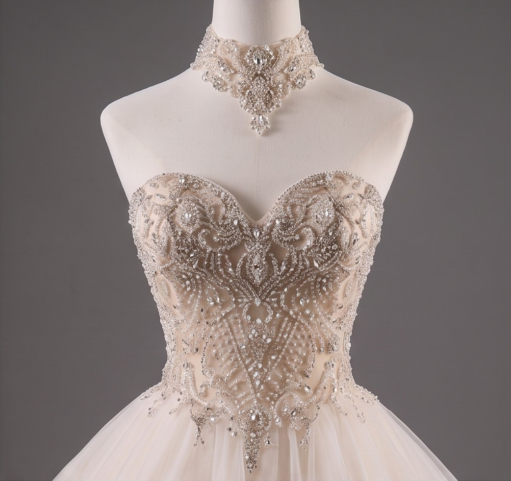
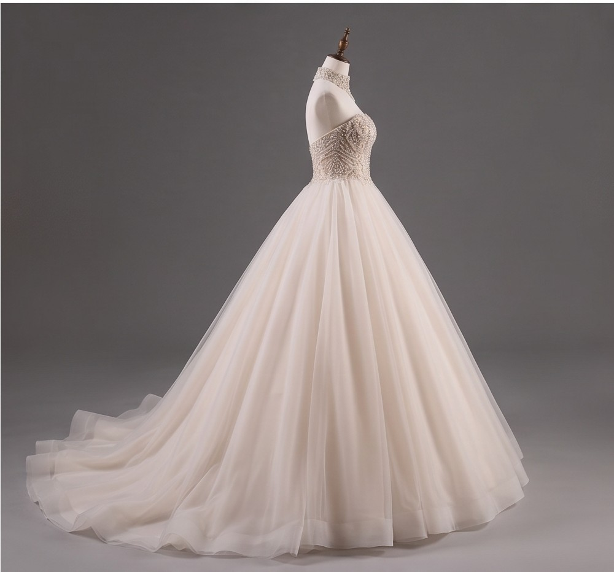
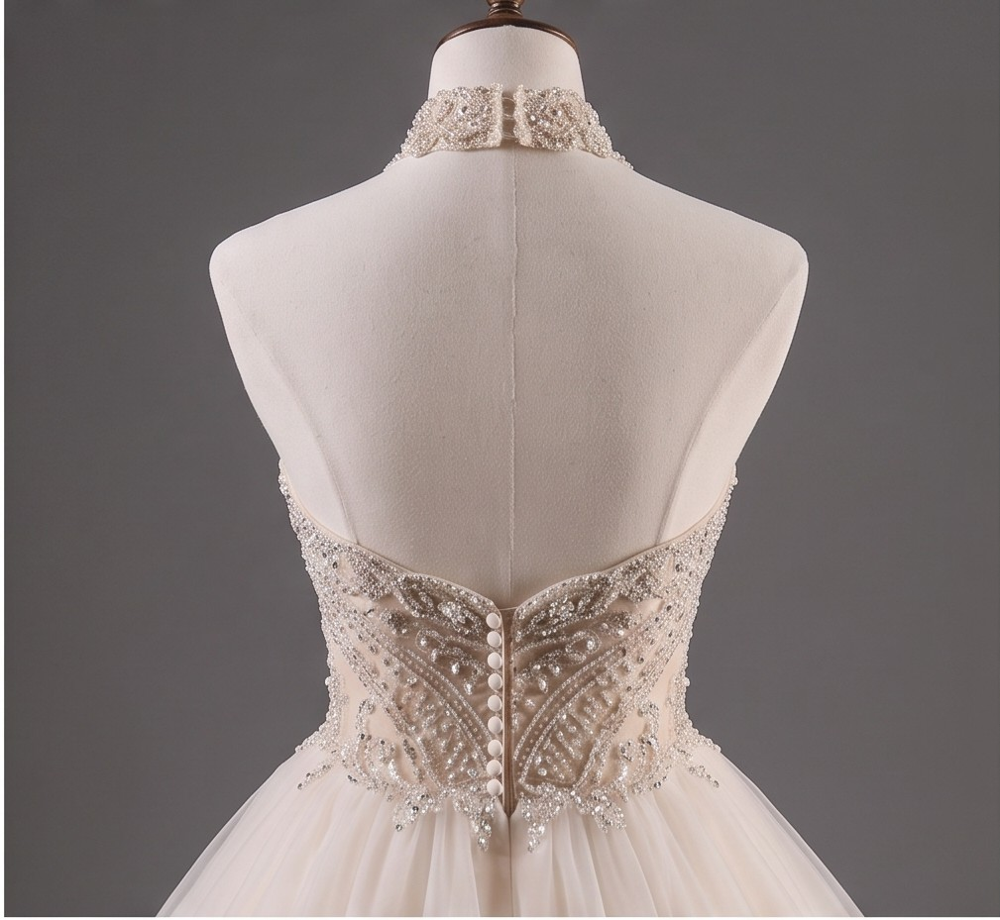

S/ 1250.00
Deslumbrante vestido de corte princesa con una silueta amplia y majestuosa que aporta un volumen imponente y de gran elegancia.
Presenta un sofisticado corpiño de escote corazón completamente adornado con pedrería y cristales bordados a mano.
Incluye un collar tipo gargantilla (choker) desmontable o integrado con pedrería brillante que se conecta sutilmente al diseño principal del corpiño, añadiendo un toque de alta costura.
Confeccionado con múltiples capas de tul suave y vaporoso que caen con gran fluidez, extendiéndose en una delicada y amplia cola trasera.
✅ Compra realizada exitosamente